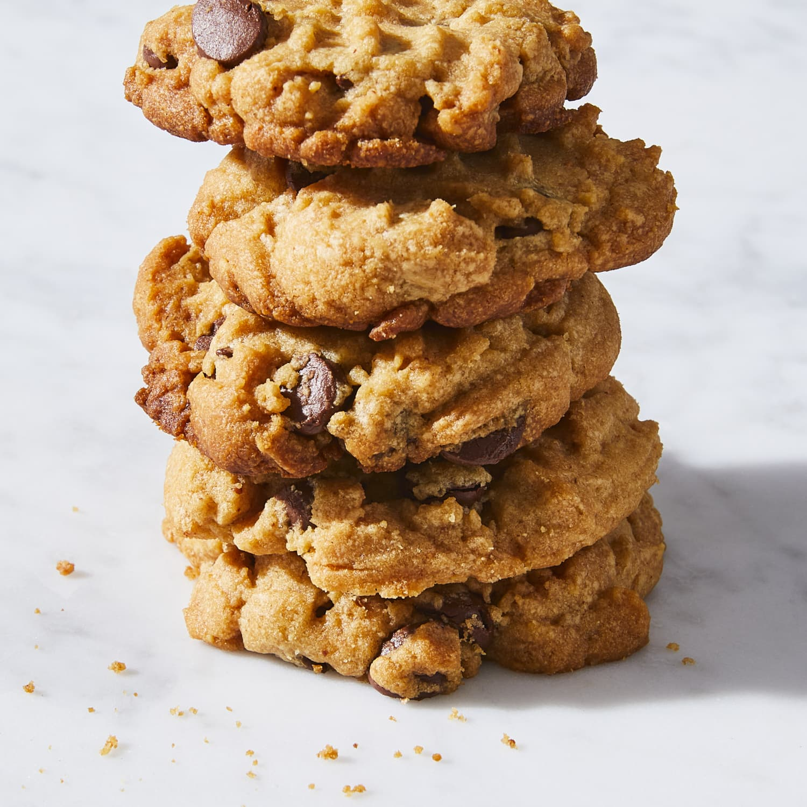

Chewy Peanut Butter Chocolate Chip Cookies

Description
An addictive chewy cookie that can be made in 35 minutes! Bake
them for friends, family, or just for yourself!
Ingredients
- 1 cup packed brown sugar
- ½ cup white sugar
- ½ cup butter, softened
- ½ cup peanut butter
- 2 eggs
- 2 tablespoons light corn syrup
- 2 tablespoons water
- 2 teaspoons vanilla extract
- 2 ½ cups all-purpose flour
- 1 teaspoon baking soda
- ½ teaspoon salt
- 2 cups chopped semisweet chocolate
Steps
- Preheat the oven to 375 degrees F (190 degrees C).
- Cream sugars, butter, and peanut butter in a large bowl
until smooth. Beat in eggs one at a time, then stir in
corn syrup, water, and vanilla. Combine flour, baking
soda, and salt in a separate bowl; stir into peanut
butter mixture. Fold in chocolate chunks.
- Scoop 1/4-cup portions of dough 3-inches apart
onto ungreased baking sheets.
- Bake in the preheated oven until edges are golden,
12 to 14 minutes. Allow cookies to cool for 1 minute
before transferring to wire racks.
- Serve and Enjoy!!